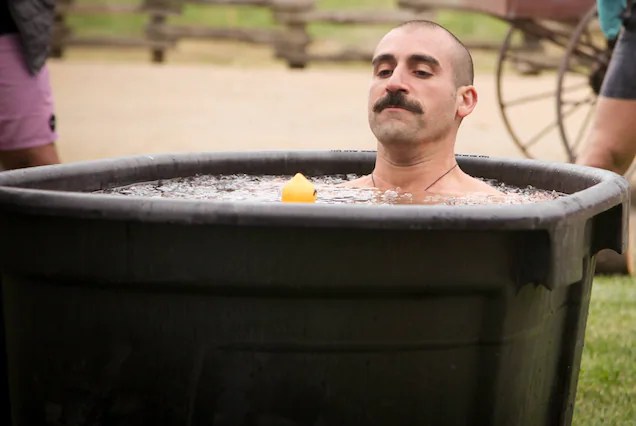

B934 · "The Cold Always Delivers..."
Hi {first_name},
After taking nearly six months off from regular cold plunges, today marks exactly one week of this ritual added back into my daily commitments.
I forgot two things:
When I initially step into the water, it seems to always brings me face to face with a range of emotions - to name a few:
And then you have the sensations:
Thinking back to my initial plunge last week, the dominant two emotions (by a landslide) were fear and anger.
Anger that it was much harder than I remember, and I didn't feel prepared.
Anger of wanting to get out, and not giving myself that option.
Anger that I wouldn't be able to maintain my control and cool while my son was watching.
Fear of what if I made the water too cold, and something bad was going to happen.
It's wild to think how all the rational parts of my brain in those initial few seconds completely went away.
It was pure survival, and near panic.
I found it hard to regulate my breath and my mind.
There was no calm, nasal breathing.
There was no stoic Mike.
There was simply an internal “holy shit!"
It was sure humbling.
But then a few things happened.
The first was that once I passed the 30-second mark, the magnitude of the discomfort started slowly to reduce.
I started regaining control over my breath.
And every second that I stayed in, was also another second that brought my time in the water closer to completion.
When I got out, there was an immediate sense of accomplishment, and no doubt, a surge of energy.
The thing I enjoy about the cold is that it is what it is.
There is no pretending with it.
It’s not trying to be anything other than it is, and you know exactly what you’re going to get.
The cold always delivers.
 I've realized that the cold is one reliable way we can train ourselves to develop a greater range and capacity to hold and experience our emotions.
To stay with them, and not collapse.
Rather, remain heart-open, even in the discomfort.
This is a skill that can be developed, and what’s even more powerful is when we do so in community.
Of course, others can't do the work for you, or me for that matter, however, when we gather in a group, the power of the experience can grow exponentially.
And that is one reason that speaks to the power of aligning with other men on this path and going through the process of transformation together.
In my upcoming small group, virtual program that will be running at the end of September, I will be bringing together 12 motivated men to step into this same energy.
Going through a process where you can meet your edges in a community of brothers is what the journey is all about.
It is called The Path to Inspired Action: Empowering the Authentic Man Within.
Right now we are taking early enrollment, and since it is a small group virtual experience, it will fill up.
If you are interested in learning more, click here.
Wishing you a badass day, Mike |